Information in the Workplace view is related to the most common concepts and queries that an individual uses and in essence becomes their personal workspace. The main objectives of this view are:
The items stored in the Workplace view can be used in many of the i2b2 views and plug-ins, such as the Query Tool view plug-in.
This section describes the layout and contents of this view.
As stated above the Workplace view is a place for users to store and organize those items they use on a regular basis. It is also a way to share these items with other users by placing them in the SHARED folder.
The Workplace view is hierarchical display of the items added by the user. There are three main branches or components of the tree that displays.
The highest level is the individual user folder ( ). This folder is automatically created with the user's name and it is used to store items added by the individual user. This level cannot be used when creating a query.
). This folder is automatically created with the user's name and it is used to store items added by the individual user. This level cannot be used when creating a query.
|
NOTE: This also includes the shared folder. |
A folder () in the workplace view contains other folders and / or items added by the user. It can be expanded and collapsed by clicking on the plus sign ( ) or negative sign (
) or negative sign ( ) next to it. A user defined folder can not be dragged to other i2b2 views. It can be moved around within the Workplace view.
) next to it. A user defined folder can not be dragged to other i2b2 views. It can be moved around within the Workplace view.
Items are the lowest level of the hierarchy. They can not be expanded further. Some examples of items are listed below.
 )
)
 )
)
 )
)
 )
)
 )
)
)
)
Users can expand or collapse a folder by clicking on the plus sign () or negative sign () next to the folder icon.
) next to the folder in the Workplace view.
) next to the folder in the Workplace view.
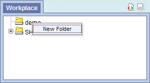
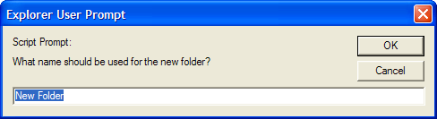
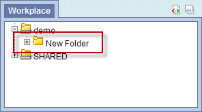
Users can easily rename an existing folder.
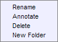

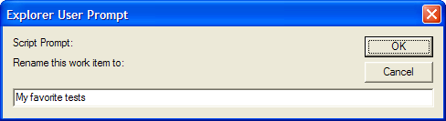
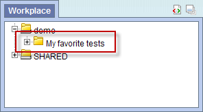
Users can change the default annotation for any of their folders in the Workplace view.
|
NOTE: The annotation is what is displayed in the tool tip. |
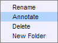
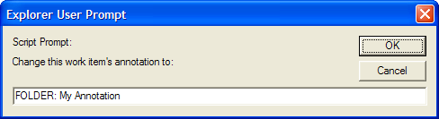
Users can remove a folder from the Workplace view.
|
WARNING: All items in the folder will be deleted when the folder is removed. It is recommended that you move those items you want to keep to another folder. |
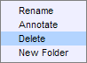
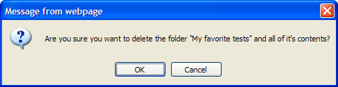
Users can easily rename an item in the Workplace view.

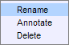
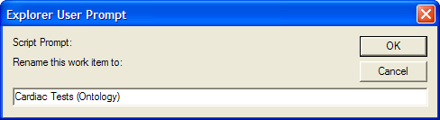
Users can change the default annotation for any of the items in their Workplace folder.
|
NOTE: The annotation is what is displayed in the tool tip. |
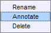
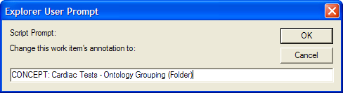
Users can remove items from the Workplace view.
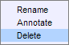
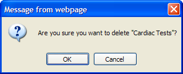
This section describes how to add items to the Workplace view.
Items can be dragged and dropped (copied) into the Workplace view from other views in the i2b2 Web Client.
A folder () and all its concepts (children) can be added to Workplace by dragging the folder name from one of the following views.
A modifier folder () and all its modifiers (children) can be added to Workplace by dragging the folder name from one of the following views.
A concept () can be added to Workplace by dragging the name of the concept from one of the following views.
A modifier () can be added to Workplace by dragging the name of the modifier from one of the following views.
A Patient set () can be added to Workplace by dragging the name of the patient set from the following view.
An Encounter set () can be added to Workplace by dragging the name of the encounter set from the following view.
A previous query ( ) can be added to Workplace by dragging the name of the previous query from the following view.
) can be added to Workplace by dragging the name of the previous query from the following view.
The Find Terms view provides a way to search for a particular concept.

|
NOTE: For detailed information on how to search for terms, please see the i2b2 Find Terms help. |
) or concept () by clicking on its name.


The Navigate Terms view contains a hierarchical display of all the concepts and modifiers that can be used to search the database.

|
NOTE: How the items are grouped and displayed is dependent on how the database is setup. |
) or concept () by clicking on its name.


The Find Terms view provides a way to search for a particular concept.
|
NOTE: For detailed information on how to search for terms and modifiers, please see the i2b2 Find Terms help. |
) or modifier () by clicking on its name.


The Navigate Terms view contains a hierarchical display of all the concepts and modifiers that can be used to search the database.
|
NOTE: How the items are grouped and displayed is dependent on how the database is setup. |
) or modifier () by clicking on its name.
The Previous Query view displays the queries that were run by the user. Each previous query contains a set of results; within these results are the result options that were selected when the query was originally run. The result options include Patient set, Encounter set, Number of patients as well as various other patient breakdowns

) by clicking on the name of the query.


) next to the name of the previous query that contains the patient set.
) next to the results folder.
) by clicking on its name.


) next to the name of the previous query that contains the encounter set.
) next to the results folder.
) by clicking on its name.


This section describes how to use items in the Workplace view.
Items can be dragged and dropped (copied) from the Workplace view to other views in the i2b2 Web client.
An ontology folder () and all its concepts (children) can be added to other views by dragging the folder name from Workplace to one of the following views.
|
NOTE: User folders can not be dragged from the Workplace view. |
A modifier folder () and all its modifiers (children) can be added to other views by dragging the modifier folder name from Workplace to one of the following views.
A concept () can be added to other views by dragging the name of the concept from Workplace to one of the following views.
A modifier () can be added to other views by dragging the name of the modifier from Workplace to one of the following views.
A previous query () can be added to other views by dragging the previous query name from Workplace to one of the following views.
A specific set of patients can be added to other views by dragging the Patient set () from Workplace to one of the following view.
A specific set of encounters (visit list) can be added to the other views by dragging the Encounter set () from Workplace to one of the following view.
A folder or individual concept can be added to the query tool view by simply dragging the item from Workplace view and dropping it into one of the panels in the Query Tool view.
) by clicking on the name of the folder.


) by clicking on the name of the folder.


A modifier folder or individual modifier can be added to the query tool view by simply dragging the item from the Workplace view and dropping it into one of the panel in the Query Tool view.
) by clicking on the name of the modifier.


A previous query can be used to run a new query or as an item within a query (query-in-query). To add a previous query to the Query Tool view simply drag the query name from the Workplace view.
Within the Query Tool view, the previous query can be added to one of the following two locations.
| Query Name field | The items and constraints from the original query will be used to create a new query. This information can be edited to make a new query or can be used as is to run the query again. |
| Panel (Group) | Used within a new query (query-in-query). The information associated with the previous query can not be edited. Add additional search criteria (items) to be used in the new query. |
|
NOTE: The process of adding a previous query to the Query Tool view is the same for both standard i2b2 queries ( |
/  ) by clicking on the name of the query.
) by clicking on the name of the query.


|
NOTE: When you run the query it will receive a new name. This is to distinguish the first previous query from the second. |
/ ) by clicking on the name of the query.


A Patient set can be used as an item within a query. To add a patient set to the Query Tool view simply drag the name of the patient set from the Workplace view.
) by clicking on its name.


An Encounter set can be used as an item within a query. To add an encounter set to the Query Tool view simply drag the name of the encounter set from the Workplace view.
) by clicking on its name.